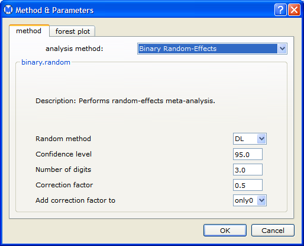

You can choose options for a meta-analysis by selecting the method tab of the Method & Parameters dialog, shown below.

Options for All Methods Except HSROC
The following analysis options are available for all methods except HSROC:
- analysis method - Method for the meta-analysis. See Meta-Analysis Methods.
- Random method -Random-effects method. Note: This is only available when Random-Effects is selected in the analysis method field. See Random-Effects Options.
- Confidence level - Confidence level for the estimate
- Number of digits - Number of digits after the decimal point to be displayed in results.
- Correction factor - Number added to the data when there are studies that have zero counts.
- Add correction factor to - Determines when the correction factor is applied:
- only0 - The correction factor is only added to the data for studies that have zero counts.
- all - When at least one study has a zero count, the correction factor is added to the data for all studies.
HSROC Options
The following options are available for the diagnostic method HSROC (Hierarchical Summary Receiver Operating Characteristic):
- Number of iterations - Number of iterations of the Gibbs sampler.
- Burn in - Number of initial iterations of the Gibbs sampler to be dropped
- Thin - Integer k specifying that only iterations that are a multiple of k contribute to the estimates being calculated.
Back to top
 | Meta-Regression | | Fixed-Effect Methods |  |